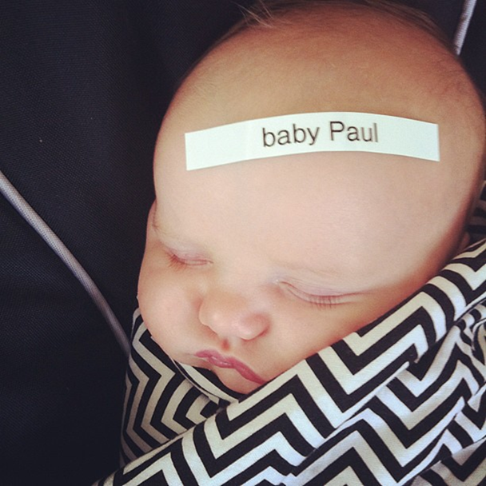
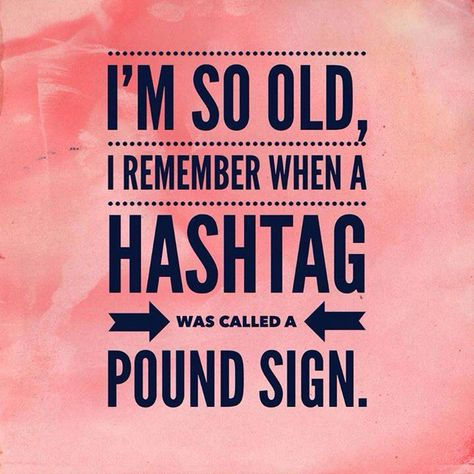
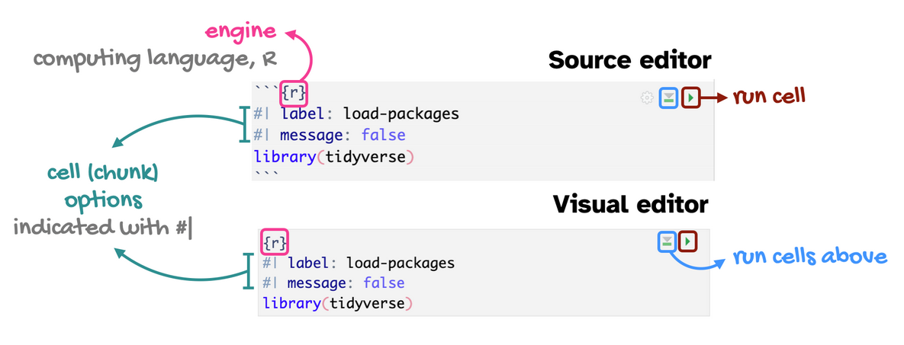

[conflicted] Will prefer haven::is.labelled over any other package.
[conflicted] Will prefer dplyr::filter over any other package.
[conflicted] Will prefer dplyr::summarise over any other package.R workflow
Agenda
- R & RStudio Workflow
- Quarto
- Coding Basics
- Getting Started
Learning objectives
By the end of the lecture, you will be able to …
- setup a workflow using R and RStudio
- use R to conduct basic calculations/comparisons
- familiarize yourself with a dataset using R and RStudio
- create a reproducible report using Quarto
R & RStudio Tour
Tour: RStudio Panes
Sit back and enjoy the show!
Mini-task
Open a new R Script.
Click the dropdown arrow next to the “New File icon,” and then “R script”.
Alternatively, hold down “Ctrl” + “Shift” + “N.”
An R-script is a file that will contain the documentation of the code of what you tell R to do.
Documentation


In .R scripts and Quarto, you can document your code. Err on the side of over documentation. Your future self will thank you. In .R scripts, the way to make a comment rather than a command, is to put a pound sign in front of the text.
Tour recap: Panes
There are four key regions or “panes” in the interface:
Source pane: where you can edit and save R scripts or author computational documents like Quarto and R Markdown.
Console pane: is used to write short interactive R commands.
Environment pane: displays temporary R objects created during that R session.
Output pane: displays the plots, tables, or HTML outputs of executed code along with files saved to disk.

Console pane: best for exploring.
Source pane: best for documenting.
Mini-task
Create a new project in RStudio.
Click: File > New Project.
In the New Project wizard that pops up, select: New Directory, then New Project.
Name the project “SOC6302”
Click Browse and save the project anywhere except your downloads folder.
Click: Create Project.
This will launch you into a new RStudio Project inside a new folder called “SOC6302”.
Mini-task
Clear the memory at every restart of RStudio.
Turn off the automatic saving of your workspace and .Rdata files when you quit RStudio. This is important for reproducibility, debugging, and avoiding littering your computer with unnecessary files.
Set this via:
- Tools > Global Options.
- Uncheck “Restore .RData into Workspace at Startup”.
- Choose “Never” on the “Save workspace to .RData on exit”.
- Click “Apply” and “OK”.

Quarto
Quarto
The tool you’ll use to create reproducible computational documents. Every piece of assignment you hand in will be a Quarto document.
- Fully reproducible reports
- R code + narrative
You are likely familiar with word processors like MS Word or Google Docs. We will not be using these in this class. Instead, the words you would write in such a document, as well as your R code, will go into a Quarto document. You will render the document (more on what this means later) to get a document out that has your words, code, and the output of that code. Everything in one place, beautifully formatted!
RScript
great for learning, exploring and tinkering.
rerun it without attention to formatting or markdown.
Quarto
great for communicating analysis and results
combines narrative explanation with code output (results).
Tour: Quarto
Sit back and enjoy the show!
- open new Quarto doc as an example
- YAML Ain’t Markup Language
- code chunk (+ code comments)
- type 2 + 2 in Quarto chunk
- add narrative (no hashtags)
- code chunk options
- narrative (heading levels)
- run (line vs code chunk)
- run cells above
- source and visual
- render
Tour recap: Quarto

Source: Dr. Mine Çetinkaya-Rundel
Tour recap: Quarto Code-chunks

- chunk labels are helpful for describing what the code is doing, for jumping between code cells in the editor, and for troubleshooting
message: falsehides any messages emitted by the code in your rendered document
Source: Dr. Mine Çetinkaya-Rundel
How will we use Quarto?
- Every code-along and milestone will be a Quarto document
- The scaffolding will decrease over the course
- You will create and submit a Quarto document for your research project
Your first code-along
Coding Basics
Coding basics
You can use R to do basic math calculations
1 + 2[1] 32 * 5[1] 10(1 + 2) / 2[1] 1.5You can create new objects with the assignment operator <-
x <- 3 * 4
x[1] 12You can (and should) make comments in your code
# R will ignore any text after # for that line
primes <- c(2, 3, 5, 7, 11, 13) # create vector of prime numbers
primes[1] 2 3 5 7 11 13Object names must start with a letter and can only contain letters, numbers, _, and .
i_use_snake_case
otherPeopleUseCamelCase
some.people.use.periods
And_aFew.People_RENOUNCEconventionSource: R for Data Science
Coding basics: demo
a <- 7
b <- 3
addition <- a + b
subtraction <- a - b
multiplication <- a * b
division <- a / b
exponentiation <- a^2a[1] 7b[1] 3addition[1] 10subtraction[1] 4multiplication[1] 21division[1] 2.333333exponentiation[1] 49Operators in R
Operators in R are symbols directing R to perform various kinds of mathematical, logical, and decision operations. A few of the key ones to know before we get started:
Assignment operators assign values to variables:
<-, ->, =
Comparison operators test equality or inequality:
==, !=, >, >=, <, <=
Logical operators indicate “and”, “or”, and “not”:
&, |, !
Comparison operators
| operator | definition |
|---|---|
< |
is less than? |
<= |
is less than or equal to? |
> |
is greater than? |
>= |
is greater than or equal to? |
== |
is exactly equal to? |
!= |
is not equal to? |
Comparison operators (cont)
x <- 5
y <- 3
equal <- x == y
not_equal <- x != y
less_than <- x < y
more_than <- x > y
less_than_or_equal_to <- x <= y
more_than_or_equal_to <- x >= yx[1] 5y[1] 3equal[1] FALSEnot_equal[1] TRUEless_than[1] FALSEmore_than[1] TRUEless_than_or_equal_to[1] FALSEmore_than_or_equal_to[1] TRUESource: IONOS editorial team
Logical operators
| operator | definition |
|---|---|
x & y |
is x AND y? |
x | y |
is x OR y? |
is.na(x) |
is x NA? |
!is.na(x) |
is x not NA? |
Logical operators (cont)
x <- TRUE
y <- FALSE
and_operator <- x & y
or_operator <- x | y
not_operator <- !xand_operator[1] FALSEor_operator[1] TRUEnot_operator[1] FALSESource: IONOS editorial team
Mini-task
Make a tiny data frame and save it.
df <- data.frame(x = c(1, 2, 3, 4, 5), y = c("a", "a", "b", "c", "c"))
df # look at df x y
1 1 a
2 2 a
3 3 b
4 4 c
5 5 cGetting Started
Packages
R comes with basic tools, but packages extend the capabilities of base R (what you already installed). An R package is like a toolbox: a collection of functions, data, and documentation that help you do specific tasks using R.
You’ll install each package (1X per system):
install.packages("tidyverse")Warning: package 'tidyverse' is in use and will not be installedYou’ll load each package (every time you use it):
library(tidyverse)What’s the difference between installing and loading a package? Why is this annoying workflow a “feature”?
Mini-task
Install the tidyverse() package, available on CRAN.
Run the code chunk in your code-along.
OR: Copy and paste the code into your Console pane. Then hit “Enter”.
install.packages("tidyverse")Mini-tasks
Install the tinytex() package, available on CRAN.
Run the code chunk in your code-along.
OR: Copy and paste the code into your Console pane. Then hit “Enter”.
install.packages('tinytex'). . .
tinytex::install_tinytex()Mini-tasks
Install the gssr() package, NOT on CRAN.
# Install 'gssr' from 'ropensci' universe
install.packages('gssr', repos =
c('https://kjhealy.r-universe.dev', 'https://cloud.r-project.org')). . .
Install the gssrdoc() package, NOT on CRAN.
# Install 'gssrdoc' from 'ropensci' universe
install.packages('gssrdoc', repos =
c('https://kjhealy.r-universe.dev', 'https://cloud.r-project.org'))Environment
Run the code chunk in your code-along.
# software documentation
sessionInfo()R version 4.6.1 (2026-06-24 ucrt)
Platform: x86_64-w64-mingw32/x64
Running under: Windows 11 x64 (build 26200)
Matrix products: default
LAPACK version 3.12.1
locale:
[1] LC_COLLATE=English_Canada.utf8 LC_CTYPE=English_Canada.utf8
[3] LC_MONETARY=English_Canada.utf8 LC_NUMERIC=C
[5] LC_TIME=English_Canada.utf8
time zone: America/Toronto
tzcode source: internal
attached base packages:
[1] stats graphics grDevices utils datasets methods base
other attached packages:
[1] gssrdoc_0.7.0 conflicted_1.2.0 summarytools_1.1.5 flextable_0.10.0
[5] kableExtra_1.4.1 labelled_2.16.0 haven_2.5.5 gssr_0.7
[9] lubridate_1.9.5 forcats_1.0.1 stringr_1.6.0 dplyr_1.2.1
[13] purrr_1.2.2 readr_2.2.0 tidyr_1.3.2 tibble_3.3.1
[17] ggplot2_4.0.3 tidyverse_2.0.0
loaded via a namespace (and not attached):
[1] gtable_0.3.6 xfun_0.60 htmlwidgets_1.6.4
[4] tzdb_0.5.0 vctrs_0.7.3 tools_4.6.1
[7] generics_0.1.4 curl_7.1.0 pacman_0.5.1
[10] pkgconfig_2.0.3 checkmate_2.3.4 data.table_1.18.4
[13] RColorBrewer_1.1-3 S7_0.2.2 uuid_1.2-2
[16] lifecycle_1.0.5 compiler_4.6.1 farver_2.1.2
[19] rapportools_1.2 textshaping_1.0.5 fontquiver_0.2.1
[22] fontLiberation_0.1.0 htmltools_0.5.9 yaml_2.3.12
[25] pillar_1.11.1 MASS_7.3-65 openssl_2.4.2
[28] cachem_1.1.0 magick_2.9.1 fontBitstreamVera_0.1.1
[31] tidyselect_1.2.1 zip_3.0.2 digest_0.6.39
[34] stringi_1.8.9 reshape2_1.4.5 pander_0.6.6
[37] fastmap_1.2.0 grid_4.6.1 cli_3.6.6
[40] magrittr_2.0.5 base64enc_0.1-6 patchwork_1.3.2
[43] withr_3.0.3 backports_1.5.1 gdtools_0.5.1
[46] scales_1.4.0 timechange_0.4.0 rmarkdown_2.31
[49] officer_0.7.6 matrixStats_1.5.0 otel_0.2.0
[52] askpass_1.2.1 ragg_1.5.2 hms_1.1.4
[55] memoise_2.0.1 evaluate_1.0.5 knitr_1.51
[58] tcltk_4.6.1 viridisLite_0.4.3 rlang_1.3.0
[61] Rcpp_1.1.2 glue_1.8.1 xml2_1.6.0
[64] svglite_2.2.2 rstudioapi_0.19.0 jsonlite_2.0.0
[67] plyr_1.8.9 R6_2.6.1 systemfonts_1.3.2
[70] fs_2.1.0 Meet your data

We’re going to use data from the U.S. General Social Survey (GSS).
Who knows what the GSS is?
Load some data
Run the code chunk in your code-along.
# Load the data (will appear in your Global Environment pane)
gss24 <- gss_get_yr(2024)Fetching: https://gss.norc.org/documents/stata/2024_stata.zip# Preview the data named gss24
gss24# A tibble: 3,986 × 989
year id wrkstat hrs1 hrs2 evwork wrkslf occ10
<dbl+l> <dbl> <dbl+l> <dbl+lbl> <dbl+lbl> <dbl+lbl> <dbl+l> <dbl+lbl>
1 2024 1 1 [wor… 43 NA(i) [iap] NA(i) [iap] 2 [som… 230 [edu…
2 2024 2 5 [ret… NA(i) [iap] NA(i) [iap] 1 [yes] 2 [som… 800 [acc…
3 2024 3 5 [ret… NA(i) [iap] NA(i) [iap] 1 [yes] 2 [som… 430 [man…
4 2024 4 2 [wor… 20 NA(i) [iap] NA(i) [iap] 2 [som… 4760 [ret…
5 2024 5 5 [ret… NA(i) [iap] NA(i) [iap] 1 [yes] 2 [som… 5860 [off…
6 2024 6 4 [une… NA(i) [iap] NA(i) [iap] NA(i) [iap] 1 [sel… 4000 [che…
7 2024 7 1 [wor… 80 NA(i) [iap] NA(i) [iap] 2 [som… 9640 [pac…
8 2024 8 6 [in … NA(i) [iap] NA(i) [iap] 1 [yes] 2 [som… 3600 [nur…
9 2024 9 1 [wor… 50 NA(i) [iap] NA(i) [iap] 2 [som… NA(n) [no …
10 2024 10 4 [une… NA(i) [iap] NA(i) [iap] NA(i) [iap] 2 [som… 5620 [sto…
# ℹ 3,976 more rows
# ℹ 981 more variables: prestg10 <dbl+lbl>, prestg105plus <dbl+lbl>,
# indus10 <dbl+lbl>, marital <dbl+lbl>, martype <dbl+lbl>, divorce <dbl+lbl>,
# widowed <dbl+lbl>, spwrksta <dbl+lbl>, sphrs1 <dbl+lbl>, sphrs2 <dbl+lbl>,
# spevwork <dbl+lbl>, cowrksta <dbl+lbl>, cowrkslf <dbl+lbl>,
# coevwork <dbl+lbl>, cohrs1 <dbl+lbl>, cohrs2 <dbl+lbl>, spwrkslf <dbl+lbl>,
# spocc10 <dbl+lbl>, sppres10 <dbl+lbl>, sppres105plus <dbl+lbl>, …A “tibble” is another name for “tidy dataset,” meaning that the data is organized in structured, clear rows and columns. “(3,986 × 989)” means the dataset contains 3,986 rows and 989 columns. Commonly, in social sciences, rows are referred to as “observations” and columns as “variables.” In our case, there are 3,986 observations (e.g., respondents) and 989 variables.
Author Naomi Wolf wrote a book about the treatment of homosexuality in 19th century England. She reported that it was punishable by death since “sodomy” charges were followed by “death recorded” in the judicial logs. However, “sodomy” referred to a host of other sexual offenses, and “death recorded” specifically means they weren’t killed because their death was recorded but not carried out.
Paul Dolan wrote a book about how marriage makes you miserable. A key part of his evidence was that in the American Time Use Survey, married people surveyed about their happiness when the spouse was present reported being happy, but when the spouse was absent they reported being unhappy. Covering up unhappiness in front of their spouse, truly miserable! But while Dolan read spouse present/absent as “spouse is in the room during questioning”, it actually meant “spouse together/separated.” He was comparing couples that were together vs. couples that were separating!
Variable documentation
The GSS documentation is available online in .pdf form.
Because we loaded the gssrdoc package, for information about a specific GSS variable:
type ?varname at the console.
In the output pane, the Help tab will show the variable documentation.
Variable documentation example
Warning in readLines("images/01/meovrwrk.txt"): incomplete final line found on
'images/01/meovrwrk.txt'
meovrwrk {gssrdoc} R Documentation
Men hurt family when focus on work too much
Description
meovrwrk
Details
Question 1297. And, do you agree or disagree: c. Family life often suffers because men concentrate too much on their work.
Overview
For further details see the official GSS documentation.
Counts by year:
year iap agree can't choose disagree neither agree nor disagree no answer strongly agree strongly disagree skipped on web Total
1972 1613 - - - - - - - - 1613
1973 1504 - - - - - - - - 1504
1974 1484 - - - - - - - - 1484
1975 1490 - - - - - - - - 1490
1976 1499 - - - - - - - - 1499
1977 1530 - - - - - - - - 1530
1978 1532 - - - - - - - - 1532
1980 1468 - - - - - - - - 1468
1982 1860 - - - - - - - - 1860
1983 1599 - - - - - - - - 1599
1984 1473 - - - - - - - - 1473
1985 1534 - - - - - - - - 1534
1986 1470 - - - - - - - - 1470
1987 1819 - - - - - - - - 1819
1988 1481 - - - - - - - - 1481
1989 1537 - - - - - - - - 1537
1990 1372 - - - - - - - - 1372
1991 1517 - - - - - - - - 1517
1993 1606 - - - - - - - - 1606
1994 1545 695 33 243 286 27 122 41 - 2992
1996 1444 825 16 198 169 1 230 21 - 2904
1998 2832 - - - - - - - - 2832
2000 940 877 43 361 331 22 209 34 - 2817
2002 1857 415 6 264 108 - 99 16 - 2765
2004 1906 460 4 188 135 - 94 25 - 2812
2006 2518 945 14 477 304 1 208 43 - 4510
2008 694 653 12 310 161 - 143 50 - 2023
2010 614 662 6 388 192 3 122 57 - 2044
2012 672 558 11 382 170 - 130 51 - 1974
2014 863 702 7 479 234 1 176 76 - 2538
2016 979 819 9 536 257 - 171 96 - 2867
2018 789 644 11 475 220 2 134 73 - 2348
2021 1315 886 1 487 1001 - 202 138 2 4032
2022 1168 885 15 537 618 1 201 117 2 3544
2024 1126 787 19 481 611 - 195 89 1 3309
Total 50650 10813 207 5806 4797 58 2436 927 5 75699
Values
1 strongly agree
2 agree
3 neither agree nor disagree
4 disagree
5 strongly disagree
NA(d) can't choose
NA(i) iap
NA(j) I don't have a job
NA(m) dk, na, iap
NA(n) no answer
NA(p) not imputable
NA(r) refused
NA(s) skipped on web
NA(u) uncodeable
NA(x) not available in this release
NA(y) not available in this year
NA(z) see codebook
Source
General Social Survey https://gss.norc.org
[Package gssrdoc version 0.7.0 Index]Variable name: meovrwrk
Variable label: Men hurt family when focus on work too much
1994 was the first year of the survey.
695 respondents agreed with the statement.
iap – missing. Values: the numeric and response category key (1 = strongly agree)
Variables
You can access the variables (i.e., columns) using the $ operator, as shown using the table() function. The variable names are case sensitive.
table(gss24$meovrwrk)
1 2 3 4 5
238 938 797 534 108 195 respondents were coded as 1 on this variable. What does that mean?
Mini-tasks
Change the code to show the variable fefam.
# Replace meovrwrk with fefam
table(gss24$meovrwrk)
1 2 3 4 5
238 938 797 534 108 . . .
add text to your code-along that interprets the results for the 2 value for fefam.
Quarto: Render
Finally, let’s render your code-along-01 and see the results!
Support
Some help videos and further explanation:
EasyR - Getting started with R the easy way
- Render code-along-01. Help from TA if needed.
- Download Milestone 01. Can’t complete until next week. But, can install and load packages.
- Work on the IPUMS section of MS01!